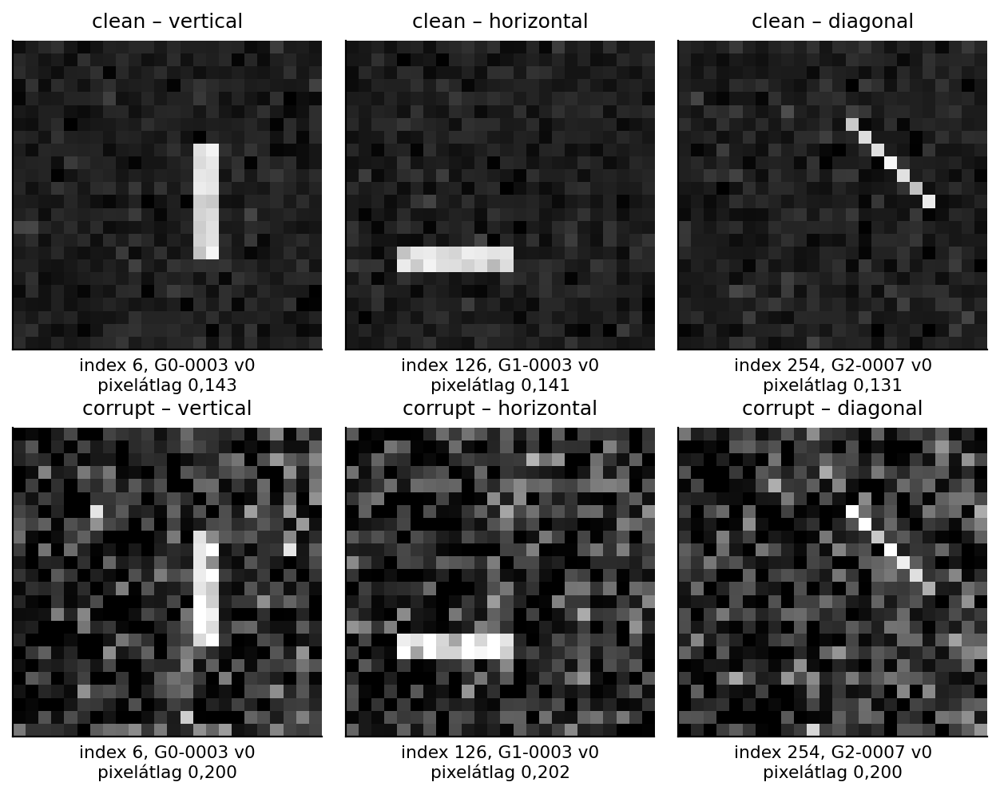

A 22.3. Zajos és hiányos címke egységben a címkére ható zajt vizsgáltuk. Itt a bemenetre ható két műveletet választjuk szét: az augmentation policy a tanítás idején szándékosan bővíti az eloszlást, a corruption pedig a kiértékelés idején szándékosan eltolja azt. A kettő összekeverése az egyik leggyakoribb kísérleti hiba: a tanítási transformáció növelheti az invarianciát, a tesztkorruptálás viszont egy másik alkalmazási tartományt szimulál.
Előismeret: a 22.2. Címkemegőrző transzformációk címkemegőrző transzformációi, a 22.3. Zajos és hiányos címke covariate-zaj fogalma, a 21.4. Osztályarány, súlyozás és céleloszlás súlyozott empirikus kockázata, a 18.4. Reziduális blokk ablatív vizsgálata matched recipe (azonos architektúra, optimalizáló és költségvetés melletti összehasonlítás) elve és a 10.4. Tanítási lépés és tanuló MLP holdout-protokollja.
Induló kérdés. Egy modellt véletlen fényesség-augmentációval tanítunk. A validációs pontosság 0,85, a sötétebb, zajosabb corrupt teszten 0,61. Miért nem mondhatjuk egyszerűen, hogy „a modell 0,24 pontot romlott”? Mert a 0,85 és a 0,61 két különböző eloszláson mért mennyiség; a különbség csak akkor értelmezhető, ha előbb pontosan megmondjuk, melyik halmaz melyik eloszlást reprezentálja. Ezt a levezetést a 3. szakasz adja meg.
Augmentation policy. Legyen a bemeneti tér címkemegőrző transzformációinak egy halmaza, pedig rajtuk egy valószínűségi eloszlás. A pár az augmentation policy. Egy tanítási lépésben minden egyes bemenetre függetlenül húzunk egy transzformációt, és a modell a képet látja; az célpont változatlan marad. A policy által definiált célfüggvény a következő módosított empirikus kockázat:
ahol a függelék A. szakaszában leírt GlyphLab-kép NCHW (batch, csatorna, magasság, szélesség) elrendezésben, az int64 osztályindex a GlyphLab rögzített megfeleltetésével ( vertical, horizontal, diagonal), pedig a veszteség. A minibatch-training ennek Monte-Carlo-közelítését minimalizálja, azaz a várható értéket független véletlen húzások átlagával becsüli: egy epochon belül egy mintaelem tipikusan csak egy -realizációt (egy konkrét húzás kimenetét) lát.
A GlyphLab-szerződés fontos korlátja, hogy a 90°-os forgatás nem címkemegőrző: a vertical osztályt horizontalra képezi, és a diagonal osztályban csak az egyik ferde irány szerepel. Megengedhető viszont a multiplikatív fényesség-skálázás, az additív zaj, a kis eltolás és a kontrasztmódosítás, mert ezek nem változtatják meg az orientáció szemantikáját.
Seed. Az a véletlenállapot, amely a policy-transzformációk húzását és az esetleges sztochasztikus korruptálást vezérli. Az 5.4. Függő képek, seedek és resampling szerint a reprodukálhatósághoz seed, algoritmus, könyvtárverzió és adatbetöltési sorrend együttesen szükséges; önmagában egyetlen seed rögzítése nem garantálja a hordozhatóságot.
Corruption. Kizárólag a tesztbemenetekre
alkalmazott, rögzített vagy seeddel rögzített degradáló leképezés. A
GlyphLab corrupted_test.npy fájlja a 60 test képet zajjal
és fényességgradienssel módosítja, ugyanabban a scene/view sorrendben,
mint a clean test. A corruption nem része a tanítási policynek.

metadata.csv
test sorai közül osztályonként a legkisebb indexű; adat:
images.npy és
corrupted_test.npy).Domain shift. Az a helyzet, amikor a tanítási és az alkalmazási bemeneti eloszlás különbözik: . A corrupt teszt egy szintetikus corruption shift (bemeneti eltolódás): a címkét változatlanul hagyjuk, de az eloszlását a leképezéssel eltoljuk. Ez önmagában nem covariate shift a szigorú értelemben, mert a címke változatlanul hagyása nem jelenti, hogy a feltételes eloszlás megmarad: az információvesztő zaj (például erős elmosás) a címke feltételes eloszlását, a posteriort irányba mozdíthatja. Covariate shiftként csak akkor kezeljük, ha a feltevést külön igazoltuk vagy vállaljuk. A továbbiakban a corrupt tesztet ezzel a feltevéssel kezelt corruption shiftként értelmezzük, és ahol a feltevés nem áll, azt külön jelezzük.
Frozen holdout. Olyan teszt-/kiértékelési halmaz, amelyet pontosan egyszer, az összes modell- és hiperparaméter-döntés után értékelünk ki, további frissítés vagy választás nélkül. A rajta mért metrika annak az eloszlásnak a kockázatát becsli, amelyet a halmaz reprezentál.
Legyen a képtér, a célhalmaz. A GlyphLab generátor definiál egy együttes eloszlást fölött: osztályfeltételes jelenetparaméterekből és nézetfüggő tiszta zajból. A clean test 30 független testjelenetből áll, jelenetenként két nézettel; az egyes képek marginális törvénye így . Legyen
az a rögzített, mérhető leképezés, amely a
corrupted_test.npy-ben tárolt zaj- és
fényességgradiens-műveletet írja le; a fájl ennek a leképezésnek a 60
testképre vett realizált értékét rögzíti, a pushforward-állításhoz pedig
-t
a teljes
-en
adott determinisztikus leképezésnek tekintjük. A corrupt teszt elemei
,
a hozzájuk tartozó célpont továbbra is
.
Állítás 3.1 (reprezentált eloszlás és torzítatlanság). Tegyük fel, hogy
Ekkor a clean teszt a eloszlást, a corrupt teszt pedig a
pushforward (kép-) eloszlást reprezentálja; a jelölés a szerinti kép-eloszlást rövidíti. Továbbá a 0/1 hibára (vagy bármely más korlátos veszteségre)
Bizonyítás. A leképezés pontonként hat az képre, és -t nem módosítja, ezért minden pár marginális törvénye azonos a pár törvényével, ahol . A jeleneten belüli nézetfüggés a marginális törvényt nem érinti, csak az együttes eloszlás korrelációs szerkezetét. Rögzített mellett az empirikus átlag lineáris funkcionál, így a várható értéke az egyedi várható értékek átlaga. A törvényazonosság miatt minden tag a jobb oldali integrállal egyenlő, tehát az állítás teljesül.
Ha a corruptálás zajkomponense nem rögzített leképezés, hanem a mentett zajrealizációk képenként eltérőek, akkor nem létezik egyetlen közös leképezés. Ilyenkor a modell , (vagy egy átmeneti kernel). Ha minden képhez egymástól és a mintától független realizáció tartozik, a átlag már egyetlen realizációval is torzítatlan becslője az átlagos corruption-kockázatnak, -nak. Több zajrealizáció a becslő varianciáját csökkenti, a torzítatlanságnak nem feltétele. A GlyphLab corrupt tesztje a mentett realizációkkal ennek egy véges mintáját adja; a rögzített fájlra vonatkozó állítás az adott realizációkra feltételes.
A frozen holdout megsértésének formális következménye a következő kiválasztási torzítás.
Állítás 3.2 (kiválasztási torzítás a teszten végzett választásnál). Legyen jelölt modell , és legyen az -edik modell empirikus hibája a corrupt teszten. Minden rögzített -re teljesüljön , ahol a valódi hiba. Ha a kiválasztás , akkor
Bizonyítás. Minden rögzített -ra . Várható értéket véve . Mivel ez minden -ra igaz, . A kiválasztott modell jelentett hibája éppen .
A pontossággal való maximalizáló kiválasztásra legyen az -edik modell empirikus, a valódi pontossága a corrupt eloszláson. Ha minden -re, akkor : minden -ra , így várható értékben , és ez minden -ra fennáll. A jelentett maximum tehát felfelé torzított a legjobb valódi pontossághoz képest is. A tétel azt mondja ki, hogy a corrupt teszten végzett adaptív választás után a jelentett szám már nem a kiválasztott modell érintetlen becslője, hanem szélsőérték-statisztika.
Tekintsünk egy -as, egycsatornás vertical képet:
A policy legyen: valószínűséggel -cal szorzunk, különben azonosság. Három húzás szemléltetése:
| Húzás | Transzformáció | Kapott osztálycímke | Átlagintenzitás |
|---|---|---|---|
| 1. húzás | fényesség | 0 (vertical) | |
| 2. húzás | azonosság | 0 (vertical) | |
| 90°-os forgatás (tiltott) | 1 (horizontal) |
A brightness-transzformáció megőrzi az orientációt, ezért a policy része lehet; a 90°-os forgatás a GlyphLab-szerződés szerint nem. A corruptáló leképezésre alkalmazzuk a oszlopgradienst, zaj nélkül:
a negatív oszlopot a tartomány nullára vágja. A címke még mindig 0, de a jobb oldali intenzitás megváltozott: ez a corruption shift apró, kézzel ellenőrizhető esete; a 2. szakasz feltevése szerint covariate shiftként akkor kezelhetjük, ha a leképezés az orientáció információját megőrzi — itt ez teljesül, mert a gradiens a glyph világos oszlopát nem tünteti el.
Minimális NumPy-ellenőrzés:
import numpy as np
def brightness_policy(x: np.ndarray, rng: np.random.Generator) -> np.ndarray:
# x: (C,H,W) float32; csak fényesség, eltolás nélkül
x = x.astype(np.float32)
a = np.float32(0.8) if rng.random() < 0.5 else np.float32(1.0)
return np.clip(a * x, 0.0, 1.0).astype(np.float32)
rng = np.random.default_rng(1)
img = np.zeros((1, 3, 3), dtype=np.float32)
img[0, :, 1] = 1.0 # vertical bar
for step in range(5):
out = brightness_policy(img, rng)
col_sums = out[0].sum(axis=0) # (3,) oszlopösszegek
assert int(col_sums.argmax()) == 1 # az orientáció megmaradt
print(step, out[0].tolist())A kimenet az rng-állapottól függ; az ellenőrzött invariáns az, hogy az oszlopösszegek maximuma minden húzás után a középső oszlopban marad, tehát a vertical címke nem változik. A kódot a tanuló a saját környezetében futtathatja.
Előfeltételek. Python 3.12, a lab/
csomag telepítve (cd lab && uv sync), NumPy 2.3.5
és torch 2.14.1 (CPU). A lock fájl (lab/uv.lock) ezeket a
verziókat telepíti; a fejezetben közölt mért kimenetek a könyv ellenőrző
környezetéből származnak (Python 3.12.3, NumPy 2.5.4, pandas 3.1.0,
torch 2.15.0+cpu). A két környezet a laborokban ugyanazt a kimenetet
adta; eltérés esetén az utolsó jegyek különbözhetnek (loss kb.
,
accuracy egy megfigyelési egységnyi). Szükséges fájlok: a GlyphLab
data/ mappája és data/corrupted_test.npy;
futtatás: python quickcheck.py, majd
python augment_experiment.py --seed 20261020 --epochs 15 --policy identity
és ugyanígy --policy brightness_shift. Várható futásidő
CPU-n néhány perc, a tényleges időt a futás naplózza.
A labor egyetlen kötelező szabálya: a corrupted_test.npy
csak a befagyasztott modellen értékelhető, utólagos ráhangolás nélkül. A
protokoll:
scene_id; a
bootstrap és a páros összehasonlítás jelenetszintű.Munkakönyvtár: a lab/ könyvtárból indulva. Először az
adat integritását a kezdő labor quickcheck.py ellenőrzi. A
végrehajtás CPU-n, float32-ben, seed 20261020 mellett
fut:
python quickcheck.py
python augment_experiment.py --seed 20261020 --epochs 15 --policy identity
python augment_experiment.py --seed 20261020 --epochs 15 --policy brightness_shiftAz augment_experiment.py minimális, önállóan futtatható
váza:
# lab/augment_experiment.py
import argparse, csv, json
from pathlib import Path
import numpy as np
import torch
import torch.nn.functional as F
from torch import nn
from torch.utils.data import DataLoader, TensorDataset
data = Path("data")
manifest = json.loads((data / "manifest.json").read_text())
assert manifest["generator_version"] == "1.0"
X = torch.from_numpy(np.load(data / "images.npy")) # (360,1,24,24)
y = torch.from_numpy(np.load(data / "labels.npy")) # (360,)
X_c = torch.from_numpy(np.load(data / "corrupted_test.npy")) # (60,1,24,24)
with open(data / "metadata.csv", newline="") as f:
rows = list(csv.DictReader(f))
# A metadata `index` oszlopa köti a sorokat az images.npy soraihoz; a CSV
# sorszámát nem használjuk. A split a `split` oszlopból jön.
rows.sort(key=lambda r: int(r["index"]))
assert [int(r["index"]) for r in rows] == list(range(len(X)))
split = np.array([r["split"] for r in rows])
tr = torch.from_numpy(np.flatnonzero(split == "train"))
va = torch.from_numpy(np.flatnonzero(split == "val"))
te = torch.from_numpy(np.flatnonzero(split == "test"))
assert (len(tr), len(va), len(te)) == (240, 60, 60)
assert X_c.shape == (len(te), 1, 24, 24)
def augment(batch: torch.Tensor, rng: np.random.Generator,
policy: str = "brightness_shift") -> torch.Tensor:
# batch: (N,1,H,W) float32; identity vagy brightness + mintánkénti eltolás.
if policy == "identity":
return batch
N = batch.shape[0]
a = torch.from_numpy(rng.uniform(0.8, 1.2, size=(N, 1, 1, 1))
.astype(np.float32))
out = batch * a
# Mintánként {-1,0,1} wrap-eltolás. A GlyphLab-generátor minden glyph
# körül legalább 3 pixeles hátteret hagy, ezért a wrap legfeljebb háttér-
# pixelt visz át, a glyph és a címke nem változik.
dx = rng.integers(-1, 2, size=N)
for i in range(N):
out[i] = torch.roll(out[i], int(dx[i]), dims=-1)
return torch.clamp(out, 0.0, 1.0)
class SmallCNN(nn.Module):
def __init__(self):
super().__init__()
self.features = nn.Sequential(
nn.Conv2d(1, 16, 3, padding=1), nn.ReLU(), nn.MaxPool2d(2),
nn.Conv2d(16, 32, 3, padding=1), nn.ReLU(), nn.MaxPool2d(2))
self.head = nn.Sequential(nn.Flatten(), nn.Linear(32 * 6 * 6, 3))
def forward(self, x):
return self.head(self.features(x))
def evaluate(model, Xq, yq):
model.eval()
with torch.no_grad():
logits = model(Xq)
loss = F.cross_entropy(logits, yq, reduction="mean").item()
acc = (logits.argmax(1) == yq).float().mean().item()
return loss, acc, logits.argmax(1)
def main(seed=20261020, epochs=15, policy="brightness_shift"):
torch.manual_seed(seed)
rng = np.random.default_rng(seed)
train_ds = TensorDataset(X[tr], y[tr])
train_loader = DataLoader(train_ds, batch_size=32, shuffle=True)
model = SmallCNN()
opt = torch.optim.AdamW(model.parameters(), lr=1e-3, weight_decay=1e-4)
best_val = float("inf")
Path("runs").mkdir(exist_ok=True)
ckpt = f"runs/best_seed{seed}_{policy}.pt"
for epoch in range(1, epochs + 1):
model.train()
for xb, yb in train_loader:
opt.zero_grad()
loss = F.cross_entropy(model(augment(xb, rng, policy)), yb)
loss.backward()
opt.step()
val_loss, val_acc, _ = evaluate(model, X[va], y[va])
if val_loss < best_val:
best_val = val_loss
torch.save(model.state_dict(), ckpt)
print(f"{epoch:02d} val_loss={val_loss:.4f} val_acc={val_acc:.4f}")
# Választás CSAK clean val alapján történt; most jön a befagyasztott értékelés.
model.load_state_dict(torch.load(ckpt))
_, clean_acc, clean_pred = evaluate(model, X[te], y[te])
_, corrupt_acc, corr_pred = evaluate(model, X_c, y[te])
test_scenes = [rows[i]["scene_id"] for i in te.tolist()]
scene_clean, scene_corr = {}, {}
for idx, sid in enumerate(test_scenes):
scene_clean.setdefault(sid, []).append(
(clean_pred[idx] == y[te][idx]).item())
scene_corr.setdefault(sid, []).append(
(corr_pred[idx] == y[te][idx]).item())
# Előjel: clean - corrupt, tehát a pozitív érték romlás.
drops = np.array([np.mean(scene_clean[sid]) - np.mean(scene_corr[sid])
for sid in scene_clean])
boot_rng = np.random.default_rng(seed)
boot = np.array([boot_rng.choice(drops, len(drops), replace=True).mean()
for _ in range(2000)])
lo, hi = np.percentile(boot, [2.5, 97.5])
print(f"clean_test_acc={clean_acc:.4f} corrupt_test_acc={corrupt_acc:.4f}")
assert len(drops) == 30, len(drops)
print(f"mean_scene_drop={drops.mean():.4f} ci95=[{lo:.4f},{hi:.4f}]")
if __name__ == "__main__":
parser = argparse.ArgumentParser()
parser.add_argument("--seed", type=int, default=20261020)
parser.add_argument("--epochs", type=int, default=15)
parser.add_argument("--policy", choices=("identity", "brightness_shift"),
default="brightness_shift")
args = parser.parse_args()
main(seed=args.seed, epochs=args.epochs, policy=args.policy)A kód ezen a környezeten lefutott: Python 3.12.3, torch 2.15.0+cpu,
CPU float32, torch.get_num_threads()=10, seed 20261020. A
két policy futásának utolsó sorai:
# identity
15 val_loss=0.5627 val_acc=0.8667
clean_test_acc=0.9333 corrupt_test_acc=0.8500
mean_scene_drop=0.0833 ci95=[0.0167,0.1667]
# brightness_shift
15 val_loss=0.4780 val_acc=0.9000
clean_test_acc=0.9333 corrupt_test_acc=0.8500
mean_scene_drop=0.0833 ci95=[0.0000,0.1833]A kód assert-jei a split méreteit, a corrupt teszt
alakját és a jelenetszámot ellenőrzik. Ezen az egy seeden mindkét policy
clean teszt pontossága
,
corrupt pontossága
,
a jelenetszintű átlagos romlás
;
a bootstrap-intervallumok átfednek, és a brightness+shift policy nem
mutat mérhető javulást az identity baseline-hoz képest. A két policy
páros összehasonlítása (azonos seedek, jelenetszintű különbség
bootstrapja) az F5 feladat; egyetlen seedből az eredmény nem
általánosítható, és a jelenetszintű CI is csak a 30 tesztjelenetre
feltételes.
Értelmezés: a clean pontosság a , a corrupt pontosság a kockázatának becslője. A páros jelenetszintű drop azt méri, hogy ugyanazon jeleneteken mekkora romlást okoz a corruptálás; a két view átlagolása jelenetre csökkenti a nézetfüggő zaj hatását.
Az F5 kísérlettervezési feladat kötelező sablonja. A válaszban adja meg a hipotézist; a független és a függő változót; a kontrollt vagy baseline-t; a modellarchitektúrát, az optimalizálót, a tanulási rátát és az epochszámot; a seedek számát és konkrét értékét; a metrikát és a megfigyelési egységet; az előre rögzített, számmal megfogalmazott döntési szabályt és a statisztikai próbát; valamint az erőforráskeretet. Ha a feladat nem tanít modellt, a tanítási recept helyett az adott eljárás kontrollját, döntési szabályát és erőforrását kell kitölteni.
F1 (fogalmi, nehézség 1). Definiálja az augmentation policy-t és a corruption-t, és magyarázza el, miért nem címkemegőrző a 90°-os forgatás a GlyphLabban. Adjon meg egy megengedett és egy tiltott transzformációt, a bemeneti/kimeneti alakokkal együtt. Elvárt eredmény: saját megfogalmazású definíció, egy táblázat és egy mondat arról, hogy a policy miért csak a tanítási bemenetre hat.
F2 (levezetési, nehézség 2). Tegyük fel először, hogy egy befagyasztott modell corrupt tesztbeli pontossága 60 független Bernoulli-megfigyelés összege, siker-valószínűséggel. Vezesse le az empirikus pontosság várható értékét és szórásnégyzetét. Ezután mondja ki, és vázolja a 3.1. Állítás torzítatlansági részének bizonyítását determinisztikus mellett (a teljes bizonyítás a 3. szakaszban áll). Elvárt eredmény: képletek, a , számértékek, valamint annak indoklása, hogy a jeleneten belüli pozitív korreláció miért növelheti a szórást az i.i.d. képlethez képest.
F3 (implementációs, nehézség 2). Írjon
apply_augmentation(X, Y, seed, use_shift=True) függvényt,
ahol X alakja (N,1,H,W) float32,
Y alakja (N,) int64. A függvény
brightness-skálázást és opcionális
eltolást alkalmaz, Y-t változatlanul adja vissza, és
kizárja a forgatást. Ellenőrizze, hogy két azonos seedű hívás bitre
azonos tömböt ad, az alakok megmaradnak, és az értékek
-ben
vannak. Elvárt eredmény: teljes kód, seed-ellenőrzés, shape-assert és
egy rövid magyarázat a copy szükségességéről.
F4 (hibakeresési, nehézség 2). Az alábbi vázlat öt modellt tanít, a corrupt teszten választja ki a legjobbat, majd ugyanezt a pontosságot jelenti végső eredményként:
for i in range(5):
train_model(seed=i)
acc[i] = evaluate(corrupt_test).accuracy
best = argmax(acc)
print("végső corrupt teszt pontosság:", acc[best])Azonosítsa a hibát, adja meg a 3.2. Állításból következő torzítás irányát (a pontosság felfelé, a hiba lefelé torzul), és írja le a javított protokollt. Elvárt eredmény: hibalokalizálás, következmény, javítás lépései.
F5 (kísérlettervezési, nehézség 3). Tervezzen GlyphLab-kísérletet annak eldöntésére, hogy a brightness+shift augmentáció csökkenti-e a clean→corrupt jelenetszintű romlást az identity baseline-hoz képest. Adja meg a matched recipe minden rögzített döntését, a seedek számát, a metrikát, a jelenetszintű bootstrap egységet és a konfidenciaintervallum ismételt mintavételi értelmezését (vö. [S04]). Elvárt eredmény: protokoll, baseline, változó tényező, erőforrás-korlát és az érvényességi határ. Előre megadott győztes nem szükséges.
F1 megoldás. A policy : tanítási időben minden képre húzás után -et adunk a hálónak, változatlan. A corruption a tesztképekre alkalmazott rögzített leképezés, amely a kiértékelési tartományt tolja el. A 90°-os forgatás a vertical-t horizontalra cseréli, a diagonal osztályban pedig a másik ferde irányt állítja elő, amely nincs a címkekészletben; ezért nem címkemegőrző. Megengedett: , . Tiltott: 90°-os forgatás. A policy csak a tanítási bemenetre hat, mert a teszt eloszlásának megváltoztatása nélkül akarunk invarianciát tanítani.
F2 megoldás. Legyen független az képre, . Ekkor , és a függetlenség miatt
tehát a szórás . A 3.1. Állítás bizonyítása: minden marginális törvénye törvénye mellett, mert pontonként hat és -t nem érinti; rögzített esetén az átlag lineáris, ezért a várható érték az egyedi várható értékek átlaga, ami a jobb oldali integrállal egyenlő. A jeleneten belüli két view pozitívan korrelált, így a független mintákra érvényes szórásnégyzet alulbecsli a tényleges szórást; az effektív mintanagyság (az i.i.d. mintáéval azonos szórásnégyzetet adó képzeletbeli mintaszám) 30 jelenet és 60 kép között van, amint azt az 5.4. Függő képek, seedek és resampling is tárgyalja.
F3 megoldás.
import numpy as np
def apply_augmentation(X, Y, seed, use_shift=True):
X = np.asarray(X, dtype=np.float32).copy()
Y = np.asarray(Y, dtype=np.int64)
rng = np.random.default_rng(seed)
N = X.shape[0]
a = rng.uniform(0.8, 1.2, size=(N, 1, 1, 1)).astype(np.float32)
out = X * a
if use_shift:
dx = rng.integers(-1, 2, size=N)
for i in range(N):
out[i] = np.roll(out[i], int(dx[i]), axis=-1)
out = np.clip(out, 0.0, 1.0).astype(np.float32)
return out, Y.copy()
X0 = np.zeros((2, 1, 4, 4), dtype=np.float32)
X0[:, 0, :, 1] = 1.0
Y0 = np.array([0, 0], dtype=np.int64)
a1, y1 = apply_augmentation(X0, Y0, 7)
a2, y2 = apply_augmentation(X0, Y0, 7)
assert a1.shape == X0.shape and y1.shape == Y0.shape
assert np.array_equal(a1, a2) and np.array_equal(y1, y2)
assert np.array_equal(y1, Y0) and np.all((a1 >= 0.0) & (a1 <= 1.0))
# Az eltolás helyességének ellenőrzése: azonos seeddel a brightness-húzás ugyanaz,
# ezért az eltolt kimenetnek cirkuláris egész eltolással át kell vihetőnek lennie
# a nem eltolt kimenetbe, mégpedig pontosan egy {-1, 0, 1} értékkel képenként.
a_ns, _ = apply_augmentation(X0, Y0, 7, use_shift=False)
a_sh, _ = apply_augmentation(X0, Y0, 7, use_shift=True)
for i in range(X0.shape[0]):
shifts = [d for d in (-1, 0, 1)
if np.array_equal(a_sh[i], np.roll(a_ns[i], d, axis=-1))]
assert len(shifts) == 1, (i, shifts)A copy nem szükséges ahhoz, hogy a skalározás ne írja
felül a hívó X-ét: az out = X * a új tömböt
hoz létre, és a np.roll is új tömböt ad vissza. A
.copy() itt védekező másolat, amely garantálja, hogy a
visszaadott tömb semmilyen esetben ne osszon memóriát a bemenettel; az
Y.copy() ugyanezt biztosítja a címkékre, jóllehet azokat a
függvény nem módosítja.
F4 megoldás. Hiba: a corrupt tesztet modellválasztásra használják, tehát a halmaz nem frozen holdout. A 3.2. Állítás pontosság-változata szerint : a jelentett maximum felfelé torzított a legjobb valódi pontossághoz képest is, és a kiválasztott modell saját valódi kockázatának torzítatlan becslője sem. Javítás: mind az öt seed modelljét tanítsa be, mindegyikhez a clean val loss alapján válasszon best checkpointot, fagyassza be, és csak ezután értékelje egyszer a clean és a corrupt teszten; hasonlítsa össze a jelenetszintű páros különbségeket.
F5 megoldás. Egy lehetséges protokoll. Kérdés: a
brightness+shift policy csökkenti-e a corrupt romlást? Baseline:
identity policy. Változó: policy. Rögzített: SmallCNN architektúra,
AdamW, lr-ütemezés, weight decay, batch méret, epochszám, split a
manifest szerint, seedhalmaz
.
Minden seedhez a best checkpointot a clean val loss választja; a corrupt
tesztet csak a befagyasztott modellen értékeljük. Metrika: pontosság és
jelenetszintű clean−corrupt drop. A bootstrap egység
scene_id, osztályonkénti rétegzéssel, 2000
újramintavétellel; az intervallum ismételt mintavételi értelmezése a
[S04] bootstrap-értelmezését követi. A két policy-t ugyanazon seedekkel
és ugyanazon testjeleneteken párosítjuk; a döntést a jelenet szintű
páros különbség bootstrap CI-je adja: 0-t kizáró 95%-os CI esetén
állítunk javulást, egyébként nem. Érvényességi határ: egyetlen
corrupt-típus, 30 testjelenet, szintetikus GlyphLab, ezért az eredmény
nem általánosítható természetes képi domain shiftre.
Hipotézis és egység: a brightness+shift policy
csökkenti a corrupt romlást; a megfigyelési egység a
scene_id. Seed, döntési küszöb és
erőforrás: a bootstrap seedje
,
;
a döntési küszöb a jelenet szintű páros bootstrap 95%-os CI-je.
Erőforrás: CPU, float32, két policy × öt seed = 10 futás, a
360 képű GlyphLabon néhány perc; a futásidőt és a seedenkénti
epochszámot a napló rögzíti.
A leggyakoribb hiba, hogy a corrupt tesztet hangolásra (modellválasztásra) használják, majd ugyanazt a számot jelentik végső pontosságként. A 3.2. Állítás szemléltetése: ha öt jelölt valódi corrupt hibája mind , de a 60 képes empirikus hibák véletlen ingadozása , a minimum alapján kiválasztott könnyen kedvezőbbnek látszik a valódi -nál. A jelentett minimum nem a kiválasztott modell érintetlen becslője, hanem a minta szélsőértéke. A második gyakori hiba a tanítási policy alkalmazása a kiértékeléskor: ha a kiértékeléskor is véletlen fényességet húzunk, a clean teszt pontossága az augmentációs seedtől függő zajt kap, és már nem a -re vonatkozó reprodukálható becslő.
Visszautalás: a 22.3. Zajos és hiányos címke megkülönböztette a label noise-t a covariate zajtól; itt a corruptálást a covariate shift feltevésével kezeljük: a leképezés a címkét nem érinti, és a vizsgált degradáció az orientáció információját megtartja; a feltevés általános esetben igazolandó, nem automatikus. A 21.4. Osztályarány, súlyozás és céleloszlás súlyozott empirikus kockázata mutatta, hogy a cél eloszlása megváltoztatható; itt a bemeneti eloszlást változtatjuk. A 18.4. Reziduális blokk ablatív vizsgálata matched recipe elve biztosítja, hogy a policy-hatást egyetlen tényező izolálja, a 10.4. Tanítási lépés és tanuló MLP pedig a holdout elkülönítését alapozta meg.
Az augmentációs policy címkemegőrző transzformációk fölötti eloszlás, amely csak a tanítási bemenetre hat, és az empirikus kockázat módosított változatát definiálja. A clean teszt a cél-eloszlást, a corrupt teszt a rögzített leképezés utáni pushforward eloszlást reprezentálja; befagyasztott modellnél a corrupt halmazon számolt empirikus hiba torzítatlan becslő. A corrupt teszten végzett modellválasztás kiválasztási torzítást okoz: a jelentett minimum várható értéke nem nagyobb a legjobb valódi hibánál. A labor ezért kizárólag clean validáción választ best checkpointot, és a corrupt halmazt egyszer, a befagyasztott modellen értékeli, jelenetszintű páros különbséggel.
A 23.1. Confusion matrix és aggregálási konvenció a confusion matrix és az aggregálási konvenciók kérdését tárgyalja; az itt bevezetett clean–corrupt páros szerkezet ott teszi lehetővé a csoportszintű intervallum és a páros összehasonlítás helyes értelmezését.